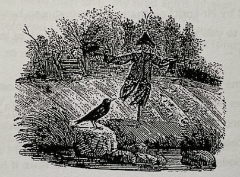

Sauce for the Daw, by John Lucas
The birds of England’s eastern shires have been well served by poets. Quite apart from Clare, there is Crabbe, whose observation of Suffolk’s shorebirds and waders, while they don’t match in detail his studies of its flora, are memorably acute; there is Lincolnshire’s Tennyson, who, after modernized plumbing had been introduced to his house, apparently enjoyed nothing so much as lying in a hot bath, smoking his pipe and reading about some of the birds on which he had written well as he would continue to do; and in our own day, Lynn Wycherley, who hails from fen country and whose poetry I have the privilege to publish, has written with extraordinary attentiveness about the tawny owl, skylark, goshawk and Bewick swan, among others. [1] In addition, Peregrine, by the great maverick ornithologist, J.A. Baker, provides not merely a detailed study of a bird he thought about to vanish from post-war Essex – ironically it has flourished whereas other birds whose continuing abundance he took for granted have virtually disappeared – but does so in prose of such luminous intensity that not to call it poetic would be simply churlish. Here, for example, is Baker on an October sighting of a male peregrine. (Called a tiercel.)
I saw his colours clearly in the brilliant light: back and secondaries rich burnt sienna; primaries black; underparts ochreous yellow, streaked with arrowheads of tawny brown. Down the pale cheeks the long dark triangle of the moustachial lobes depended from the polished sun-reflecting eyes. Through the smoke, through the spray, he glided over the wall in a smooth outpouring, like water gliding over stone. The waders shimmered to earth and slept. The hawk’s plumage stained through shadows of smoke, gleamed like mail in glittering spray. [2]
You could spend a long time analysing how Baker comes by his effects here: the aplomb that makes possible a paragraph of almost armorial, static, description to be followed by one of irresistible movement, as though the bird, having been studied in leisurely detail, almost as though it is perched on a wrist, is now released into activity, one in which beauty is combined with threat. (`Brute beauty and valour and act, oh, air, pride plume’.) It takes a true writer to convert the adjectival ‘stained’ into a verb and so energize it, give some sense of the peregrine’s looming, thrilling, menacing presence above the sleeping waders.
By comparison with the writers mentioned above, Bloomfield has little to say about birdlife and perhaps understandably most of what he does is to be found in The Farmer’s Boy. There are, for example, some breezy lines in ‘Summer’ where Giles is described as assailing the hedge-sparrows (as they must be) who ‘from the mazes of the leafy thorn / Drop one by one upon the bending corn’ (lines 55-9), and, in the same book, a longer passage notes how he bends his hat into an imitation telescope in order to watch a skylark’s flight: ‘He views the Spot, and as the cloud moves by / Again she stretches up the clear blue sky / Her form, her motion, undistinguis’d quite / Save when she wheels direct from shade to light’. (The entire passage runs lines 88-106). The image of boy peering through a hat that he has rolled into a miniature telescope, like a poor man’s version of Herschel, is almost a topos of the time, one used by Bewick among others. Nor is that all. In ‘Spring’, the whistling Giles adds his ‘shrill mattin’ to the dawn chorus in which
The Blackbird strove with emulation sweet
And echo answer’d from her close retreat
The sporting Whitethroat on some twigs-end borne
Pourd hymns to freedom and the rising morn
Stopt in her song perchance the starting Thrush
Shook a bright show’er from the Blackthorn-bush
Where dewdrops thick as early blossoms hung
And trembled as the Minstrel sweetly sung. (lines 139-145)
Those keen to credit Bloomfield’s influence on later poets may want to note here the line in ‘Home Thoughts from Abroad’ where Browning calls up a memory of how
After April, when May follows,
And the whitethroat builds, and all the swallows!
Hark, where my blossomed pear-tree in the hedge
Leans to the field and scatters on the clover
Blossoms and dewdrops — at the bent spray’s edge —
That’s the wise thrush...
These passages undoubtedly warrant some comment. Not here, however. Instead, I want to draw attention to a moment in ‘Autumn’. Moment is all it is. Bloomfield is describing a Sunday which brings the pastor to his church where ‘from the hollows of the tower on high / The greycap’d Daws in saucy legions fly.’ (lines 87-8). Blink and you miss it. I admit I would have done so had it not been for the serendipitous fact that as I was re-reading The Farmer’s Boy with an eye on what I might write for this, the 20th Number of the Bloomfield Newsletter, I was also reading Mark Cocker’s remarkable Crow Country as well as re-reading for the first time in over 40 years Daniel Deronda. Had I forgotten or had I not even noticed in my original reading how often George Eliot attaches to the pre-married Gwendolen Harleth the soubriquet ‘saucy’? To give just three of what feel to be countless instances. Mrs Davilow, Gwendolen’s mother, imagines telling her sister that she will not get Gwendolen to marry for her pleasure, ‘becoming rather saucy when she identified herself with her daughter.’ A little later, George Eliot refers to the girl’s ‘saucy satire’, and later still, when she has become engaged to Grandcourt, Gwendolen asks Daniel Deronda whether he objects to her hunting, suiting to her words ‘a saucy movement of the chin.’ It seems plain that, by the time George Eliot is using the word, ‘saucy’ has become, as it were, gendered. The word is exclusively reserved for women. They are potential Saucy Sals. The OED gives as the predominant 20th century ‘smutty, suggestive’, but that isn’t what George Eliot has in mind. It’s more that Gwendolen is ‘pert, sprightly’, though her sprightliness will be hobbled by Grandcourt’s viciousness.
But clearly, Bloomfield can’t have meant his jackdaws to be any of these things. Look the word up in Johnson’s great Dictionary of the English Language and you find that he considers it not to come from ‘sauce’ but from the Latin ‘salsus’ – which my Latin Dictionary gives as ‘salty, satirical’ – and he thus includes among its meanings ‘contemptuous of superiors; insolent; impudent; impertinent.’ In these related meanings the word hasn’t therefore much changed since Shakespeare used it in Othello, where Roderigo tells Brabantio that his daughter is in the ‘lascivious’ Moor’s clasp, although should Brabantio know this – which he clearly doesn’t – ‘we then have done you bold and saucy wrongs.’ Gone beyond the bounds of civility, he means, which is more or less what Macbeth means when he admits to being bound in by ‘saucy doubts and fears,’ of rebellion against him. The usurping king knows that there will be those in his kingdom who are contemptuous of the authority in which he’s dressed himself.
Well, jackdaws do have a reputation for impudence, though of a playful kind, which I doubt Bloomfield intends. His ‘legions’ of jackdaws are, I suspect, rather more like an unruly mob. But why? At this point we need Mark Cocker’s assistance. Cocker lives in rural Norfolk where he is able to study the vast throngs of corvids that gather of an evening before setting off for their roosting places. (These roosts are quite distinct by the way from rookeries, which are used only during the short season when the birds breed.) And one thing to emerge from his fascinating study is that crows, rooks and jackdaws roost together. Different as they may be, the jackdaws especially distinguishable not merely because they are shorter than either rook or crow but have the grey cap which Giles notices, they all come together at roosting time. In studying the birds’ habits Cocker, like any sensible ornithological writer, goes to Clare for confirmation of his own observations. Hence, his quoting some lines from The Shepherd’s Calendar, where Clare notes how
many a mingled swathy crowd
Rook crow and jackdaw noising loud
Fly to and from the dreary fen
Dull winters weary flight agen
Flopping on heavy wings away
As soon as morning wakens grey
And when the sun sets round and red
Returns to naked woods to bed
‘January: A Winter’s Day.’ [3]
The swathy (swarthy) crowd includes nearly all those smaller corvids – not ravens – whom Clare notices regularly keep company and whose habits are also decidedly regular. Measuring the approach of night, Macbeth observes that ‘The Crow makes flight to the rooky wood.’ Cocker says that ‘In pre-industrial times, before the wristwatch was a birthright, the birds’ outward and homeward processions acted as the slow-swinging metronome for the agricultural day. Farm workers used rook flights as a means of knowing exactly when to down tools’. [4] Far from unruly, then, the birds seem to operate to rule.
As with most communities, however, newcomers are liable to be resented. Territorial rights are to be protected.
The rooks begin to build & pleasant looks
The homestead elms now almost black with rooks
The birds at first for mastership will try
They fight for sticks and squabble as they flye
& if a stranger comes they soon invade
& pull his nest in pieces soon as made
The carrion crow & hawk dare never come
They dare to fight like armys round their home [5]
Cocker tells an extraordinary tale of driving past a field where he notices two rooks surrounded by a large circle of their kind. A few hours later, when he returns, the crowd has vanished, the two are dead. Why had they been killed? Were they interlopers? Had they offended against some corvid law? Were they guilty of sauciness to their own kind? What seems certain is that rough justice had been administered and its operation tells against any sense that the swathy crowd is lawless, even though the law by which it operates feels in this instance one that might have given even Draco pause. (Though probably not for long.) The circle constituted not some out-of-control mob but a parliament or anyway court martial of crows. In which case, and though I wouldn’t want to press the case, we might note that Giles sees ‘legions’ of daws’ flying from the tower, and that the prime, Latin, meaning of legion is a number – usually 5,000 – of Roman soldiers.
Well, stone the crows or stone a crow. Yet this expression, which neither Brewer nor Partridge carries, and which, less surprisingly, doesn’t turn up in the very inadequate Oxford Dictionary of Idioms, isn’t right for the context. ‘Stone the crows’ is tongue-in-cheek: ironic amazement. The Pope is a Catholic. Well, stone the crows. Crows are stoned. They are or were the arable farmer’s public enemy number one. They don’t obey his rule to keep off the land. ‘No road here.’ Clare resented such a notice. Rook, crow and jackdaw couldn’t give a damn. They are omnivorous feeders. They eat carrion, they kill small birds and animals for food — but they also eat grain. I doubt if the young boys sent out in all weathers to stone crows off newly-seeded ploughland bothered which corvid they were taking aim at. They were all pests, all insolently indifferent to efforts to drive them away, all saucy. Only a well-aimed stone could disperse them, at least for a short time. Then, back they’d come. Impudent, unruly, saucy. Nottinghamshire and England’s great bowler, Alfred Shaw, 1842-1906, always insisted that the phenomenal accuracy which made him far and away the most economical bowler of his generation came from a childhood of stoning crows in fields near his native Burton Joyce. His close friend, Arthur Shrewsbury, 1856-1903, for years an England as well as Notts. opening batsman, and with whom Shaw ran a successful sports business, thought Shaw unrivalled for line and length, and there is a touching story that they are buried twenty-two yards from each other in Gedling graveyard and that Shrewsbury’s gravestone has fallen flat — bowled out by Shaw, wags affirm, though in fact poor Shrewsbury was one of a disturbingly high number of cricketers to have taken their own lives. (And, for the record, I should add that I have never found either gravestone.)
Bewick took a more tolerant line on corvids. In vol.1 of his History of British Birds: Containing the History and Description of Land Birds, he writes of the rook that they are fond of the erucae of the hedge-chafer, or chestnut brown beetle, for which they search with indefatigable pains. They are often accused of feeding on the corn just after it has been sown, and various contrivances have been made both to kill and frighten them away; but, in our estimation, the advantages derived from the destruction they make among grubs, larvae, worms, and noxious insects, greatly overpay the injury done to the future harvest, by the small quantity of corn they may destroy in searching after their favourite food.
But Bewick confirms Clare’s account of the rook as a no-nonsense brawler when it comes to defending its patch. Rookeries, he says, ‘are often the scenes of bitter contests; the new-comers are frequently driven away by the old inhabitants, their half-built nests torn to pieces, and the unfortunate couple forced to begin their work anew in some undisturbed situation.’ As an instance of this, he cites the pair which built its nest on the vane of the spire of a building near Newcastle Exchange, ‘the nest and its inhabitants turning about with every change of wind. They returned and built their nest every year on the same place till 1793, soon after which the spire was taken down’. [6] Persistently saucy, we might say.

Bewick’s great work was first published in 1826 with his own superb illustrations. As well as The Rook, he illustrates and writes about The Jack-Daw (as he has it) and The Crow. For this last, he supplies not only a full-fig. illustration but a wondrous tailpiece in which a crow sits on a stone beside a stream looking at a scarecrow.
I would like to report that the look is one of insolent sauciness but honesty compels me to admit that I can’t be sure.
Notes
[1] Lynne Wycherley’s collections are At the Edge of Light (2003), North Flight (2006) and Poppy in a Storm-Struck Field (2009), all published by Shoestring Press. BACK
[2] The Peregrine, The Hill of Summer & Diaries: The Complete Works of J.A. Baker, Introduction by Mark Cocker & edited by John Fanshawe, Collins, 2010, p.49. (The Peregrine, based on ten years of field observations, 1955-1965, was first published in 1967.) BACK
[3] In fact, Cocker uses the Tibbles’ text, from their Selected Poems, whereas I have gone to Robinson and Summerfield’s Oxford edition. But for Cocker’s purpose, the text he uses is perfectly adequate. BACK
[4] Mark Cocker, Crow Country: A Meditation on Birds, Landscape and Nature, first published by Cape in 2007, reprinted Vintage 2008, p.122. Actually, metronomes don’t swing, they click back and forth, though that’s hardly enough of an error to hang a man on. Hugh Underhill reminds me that in the piece he wrote on `The Broken Crutch’ in the ninth issue of the Bloomfield Newsletter, he drew attention to the image of rooks rising by thousands ‘Their gliding shadows o’er the court-yard spread’. Thousands is no exaggeration. Cocker notes that during the evening pre-roost gatherings of rooks, crows and jackdaws, ‘no matter how many thousands…have poured away from the grounded mass, the original volume seems as great as ever…. When the flow ceases altogether you realize that this fantastic tumult involving tens of thousands of birds is finite after all’ (p. 4) And later, p. 128, he reports the roost at Hatton Castle in Aberdeenshire, reckoned in the 1971 bird census at 65,000 birds. BACK
[5] I have taken as text here the 1973 MidNAG edition of Birds Nest, edited by Anne Tibble, p.53. The following poem in the edition, ‘The crows will swee above’ points out that crows build so high they need never fear boys who try to rob birds’ nests: ‘They seek their house together in the gloam / & only from the stranger feel alarm’. Who is the stranger? An outsider crow? A falcon? But as long as the crow stays put the falcon can’t hurt it. Driving through Tasmania in 1997, my wife and I were suddenly alerted by the posture of a crow that was cowering – there is no other word – on a dead tree branch in a field beside the road, its shoulders hunched, feathers ruffled. The cause of the bird’s panic became clear when a marsh harrier swooped massively down and perched on the branch within a foot or so of the petrified crow. The crow did not stir, and after a few moments the marsh harrier lifted off before climbing steadily up and away. Perhaps it had already killed and eaten, but anyway falcons seize their prey in flight, swooping or ‘stooping’ on them, the talon at the rear of their claw positioned so as to drive into the neck of their victim and effect an instant kill. They can’t kill a sitting bird. BACK
[6] My text is from the Paddington edition of Masterpieces of the Illustrated Book, 1976: A History of British Birds by Thomas Bewick, pp. 85-6. BACK